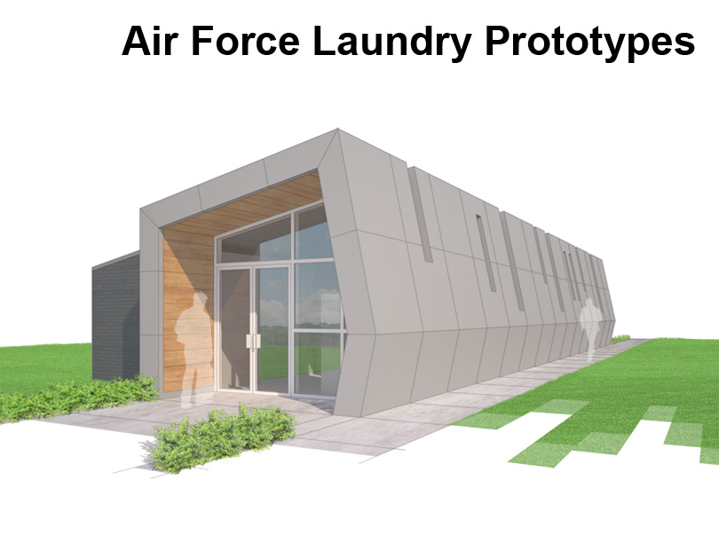

|  |
Prototype for Commercial Laundry Facilities
Over the course of one week, this study explored the design and layout for laundry facilities that could be built at Air Force bases nationwide. The first step was a study of the required equipment and how best to organize it. The second step was to develop the design for an enclosure around these layouts.
What resulted was the understanding of washing clothes – washing, drying, and folding – as a linear process. As such, two facilities were prototyped for a linear organization, one small and one large. Both were conceptualized in a way that allowed for them to be scaled to meet exact demands.
Location |
None (prototype) |
Year |
Designed 2014 |
Type |
Conceptual Design Study |
Team |
Perez, APC |
Program |
Laundry facility |